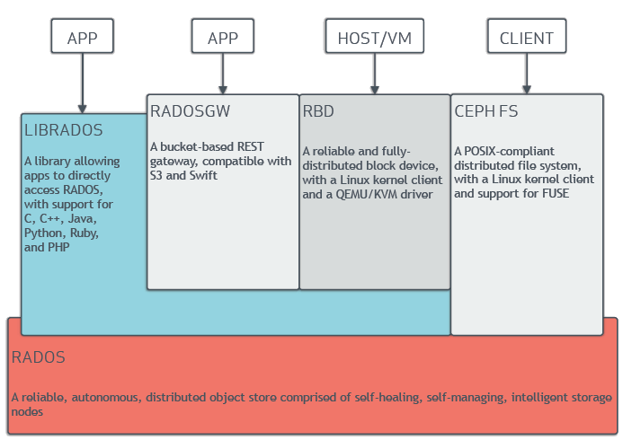

Ceph Installation Guide
Ceph is a highly scalable, open-source storage solution designed to provide unified storage for block, file, and object data. With its distributed architecture and strong data reliability features, Ceph eliminates single points of failure, making it a preferred choice for large-scale and dynamic storage environments.

This guide explains two approaches to setting up Ceph for Kubernetes:
1- In-cluster Ceph using Rook: Integrating Ceph directly into a Kubernetes cluster by deploying Rook, a Kubernetes-native operator for managing Ceph. 2- External Ceph Cluster Setup: Installing Ceph on three Ubuntu nodes outside the Kubernetes cluster and integrating it as external storage.
Create Internal Ceph Cluster
There are multiple ways to install Ceph. Rook deploys and manages Ceph clusters running in Kubernetes, while also enabling management of storage resources and provisioning via Kubernetes APIs. We recommend Rook as the way to run Ceph in Kubernetes or to connect an existing Ceph storage cluster to Kubernetes.
Rook is an open source cloud-native storage orchestrator, providing the platform, framework, and support for Ceph storage to natively integrate with cloud-native environments.
Prerequisites
- A running Kubernetes cluster with at least 3 worker nodes.(Kubernetes versions v1.27 through v1.32 are supported.)
- Helm installed on your local system.
- Ceph OSDs have a dependency on LVM in some scenario
Steps
A simple Rook cluster is created for Kubernetes with the following kubectl commands and example manifests.
- Deploy the Rook Operator
git clone --single-branch --branch v1.15.5 https://github.com/rook/rook.git
cd rook/deploy/examples
# create crds, common objects (ns, clusterroles..) and rook operator
kubectl create -f crds.yaml -f common.yaml -f operator.yaml
Running state before proceeding
- Cluster Environments
The Rook documentation is focused around starting Rook in a variety of environments
- cluster.yaml: Cluster settings for a production cluster running on bare metal. Requires at least three worker nodes.
- cluster-on-pvc.yaml: Cluster settings for a production cluster running in a dynamic cloud environment.
- cluster-test.yaml: Cluster settings for a test environment such as minikube.
We want to use production cluster with 3 worker nodes
kubectl create -f cluster.yaml
#Verify the cluster is running by viewing the pods in the rook-ceph namespace.
kubectl -n rook-ceph get pod
# See how the cephcluster created successfully and HEALTH_OK
kubectl get cephcluster -n rook-ceph
- To verify that the cluster is in a healthy state, connect to the Rook toolbox and run the ceph status command.
kubectl create -f toolbox.yaml
#Connect to the Rook toolbox
kubectl get pod -n rook-ceph -l "app=rook-ceph-tools"
kubectl exec -it rook-ceph-tools-7b67b65bd-kqjb6 -n rook-ceph -- bash
ceph status
ceph osd status
ceph df
rados df
ceph status: Overall health and operation of the cluster.
ceph osd status: Detailed status of the OSDs.
ceph df: High-level view of storage capacity.
rados df: Object-level capacity and usage details.
- Alternative installment of rook
-
The Rook Helm Chart is available to deploy the operator instead of example manifests
-
Install Rook Helm Chart
- Add the Rook Helm chart repository and install the operator:
helm repo add rook-release https://charts.rook.io/release
helm repo update
helm install rook-ceph rook-release/rook-ceph --namespace rook-ceph --create-namespace
Login ceph-dashoar ui
https://rook.io/docs/rook/v1.16/Storage-Configuration/Monitoring/ceph-dashboard/?h=dashb
- Enable the Ceph Dashboard
- Exposes the dashboard on the Internet (using a reverse proxy)
- Issues a valid TLS Certificate for the specified domain name (using ACME)
- Tells the reverse proxy that the dashboard itself uses HTTPS
-
Tells the reverse proxy that the dashboard itself does not have a valid certificate (it is self-signed)
-
reach Ceph-dashboard over ssl
-
install cert-managet to cluster
kubectl apply -f https://github.com/cert-manager/cert-manager/releases/download/v1.15.1/cert-manager.yaml
#check cert pods is running
kubectl get po --namespace cert-manager
- create ClusterIssuer as issuer.yaml
apiVersion: cert-manager.io/v1
kind: ClusterIssuer
metadata:
name: letsencrypt-prod
spec:
acme:
server: https://acme-v02.api.letsencrypt.org/directory
email: test@gmail.com
privateKeySecretRef:
name: letsencrypt-prod-private-key
solvers:
- http01:
ingress:
class: nginx
- then create ingress as ingress.yaml
apiVersion: networking.k8s.io/v1
kind: Ingress
metadata:
name: rook-ceph-mgr-dashboard
namespace: rook-ceph
annotations:
kubernetes.io/tls-acme: "true"
cert-manager.io/cluster-issuer: letsencrypt-prod
nginx.ingress.kubernetes.io/backend-protocol: "HTTPS"
spec:
ingressClassName: "nginx"
tls:
- hosts:
- ceph.xxx.com
secretName: ceph.xxx.com
rules:
- host: ceph.xxx.com
http:
paths:
- path: /
pathType: Prefix
backend:
service:
name: rook-ceph-mgr-dashboard
port:
number: 8443
-
create A record for ceph.xxx.com
-
Login to https://ceph.xxx.com
- Get Credentials
- Overview of the status of Ceph cluster
Create/build RBD storage
cd rook/deploy/examples/csi/rbd/
kubectl create -f storageclass.yaml
## this also create replicapool (CephBlockPool) with 3 replicas
# Verify created new storageclass for rbd
kubectl get sc
###
NAME PROVISIONER RECLAIMPOLICY VOLUMEBINDINGMODE ALLOWVOLUMEEXPANSION AGE
rook-ceph-block rook-ceph.rbd.csi.ceph.com Delete Immediate true xx
###
- Use this volume type in deployment. run wordpress app
cd rook/deploy/examples/
kubectl create -f mysql.yaml
kubectl create -f wordpress.yaml
#Verify the pod is up and running
kubectl get pod
#Verify the pvc and see bound
kubectl get pvc,pv
- Verify persistent volume
kubectl exec -it <wordpress-pod-name> -- /bin/bash
cd /var/www/html
echo "hello" > test.txt
ls
kubectl get pvc wp-pv-claim -o jsonpath='{.spec.volumeName}'
or
kubectl get pv
#get pv name
kubectl describe pv <wordpress-pv-name>
#get volumename
findmnt | grep rbd
#get mount path
cd <mount-path>
ls
#Verify exist test.txt
cat test.txt
- test exist persistent volume
kubectl get po
kubectl delete <pod-name>
#get new pod name
kubectl get po
kubectl exec -it <pod-name> -- cat /var/www/html/test.txt
**hello**
Create/build CEPHFS storage
cd /rook/deploy/examples
kubectl create -f filesystem.yaml
## this also create replicapool (ceph fs) with 3 replicas
# crete cephfs storageclass
cd /rook/deploy/examples/csi/cephfs
kubectl create -f storageclass.yaml
# Verify created new storageclass for cephfile system
kubectl get sc
###
NAME PROVISIONER RECLAIMPOLICY VOLUMEBINDINGMODE ALLOWVOLUMEEXPANSION AGE
rook-ceph-block rook-ceph.rbd.csi.ceph.com Delete Immediate true xx
rook-cephfs rook-ceph.cephfs.csi.ceph.com Delete Immediate true xx
###
- Use this volume type in kube-registry deployment, replica:3 in kube-system namespace
kubectl create -f kube-registry.yaml
# pod mount path : /var/lib/registry
#create new file on mounth path
kubectl exec -it <pod-replica-1> -n <namespace> -- echo "test1" > /var/lib/registry/test.txt
#verify the file exist on other pod
kubectl exec -it <pod-replica-2> -n <namespace> -- ls /var/lib/registry/
kubectl exec -it <pod-replica-2> -n <namespace> -- cat /var/lib/registry/test.txt
# veirfy volume is persistenet?
kubectl rollout restart deploment kube-registry -n <namespace>
kubectl exec -it <pod-replica-2> -n <namespace> -- cat /var/lib/registry/test.txt
Create/build OBJECT_STORAGE
- After the CephObjectStore is created, the Rook operator will then create all the pools and other resources necessary to start the service. This may take a minute to complete.
# can see ceph object storage
kubectl get CephObjectStore
NAME PHASE ENDPOINT SECUREENDPOINT AGE
my-store Ready http://rook-ceph-rgw-my-store.rook-ceph.svc:80 xxx
# To confirm the object store is configured, wait for the RGW pod(s) to start:
kubectl -n rook-ceph get pod -l app=rook-ceph-rgw
NAME READY STATUS RESTARTS AGE
rook-ceph-rgw-my-store-a-xxxxxxx 2/2 Running 0 xxx
- To consume the object store, Create a bucket:
# Now that the object store is configured, next we need to create a bucket where a client can read and write objects
# First create object storage class
kubectl create -f storageclass-bucket-delete.yaml
NAME PROVISIONER RECLAIMPOLICY VOLUMEBINDINGMODE ALLOWVOLUMEEXPANSION AGE
rook-ceph-block rook-ceph.rbd.csi.ceph.com Delete Immediate true xxx
rook-ceph-delete-bucket rook-ceph.ceph.rook.io/bucket Delete Immediate false xxx
rook-cephfs rook-ceph.cephfs.csi.ceph.com Delete Immediate true xxx
# Based on this storage class, an object client can now request a bucket by creating an Object Bucket Claim (OBC). When the OBC is created, the Rook bucket provisioner will create a new bucket
kubectl create -f object-bucket-claim-delete.yaml
# Now that the claim is created, the operator will create the bucket as well as generate other artifacts to enable access to the bucket. also configure max object and max size inside yaml
- Client Connections:
- The following commands extract key pieces of information from the secret and configmap:
```bash
config-map, secret, OBC will part of default if no specific name space mentioned
export AWS_HOST=$(kubectl -n default get cm ceph-delete-bucket -o jsonpath='{.data.BUCKET_HOST}') export PORT=$(kubectl -n default get cm ceph-delete-bucket -o jsonpath='{.data.BUCKET_PORT}') export BUCKET_NAME=$(kubectl -n default get cm ceph-delete-bucket -o jsonpath='{.data.BUCKET_NAME}') export AWS_ACCESS_KEY_ID=$(kubectl -n default get secret ceph-delete-bucket -o jsonpath='{.data.AWS_ACCESS_KEY_ID}' | base64 --decode) export AWS_SECRET_ACCESS_KEY=$(kubectl -n default get secret ceph-delete-bucket -o jsonpath='{.data.AWS_SECRET_ACCESS_KEY}' | base64 --decode) ```
- Consume the Object Storage
This section will guide you through testing the connection to the CephObjectStore and uploading and downloading from it. Run the following commands after you have connected to the Rook toolbox.
#To test the CephObjectStore, set the object store credentials in the toolbox pod that contains the s5cmd tool
#The default toolbox.yaml does not contain the s5cmd. The toolbox must be started with the rook operator image (toolbox-operator-image), which does contain s5cmd.
kubectl create -f rook/deploy/examples/toolbox-operator-image.yaml
kubectl exec -it <pod-name> -n rook-ceph -- bash
mkdir ~/.aws
cat > ~/.aws/credentials << EOF
[default]
aws_access_key_id = 8AQH5P0IIH21FW30RJAI
aws_secret_access_key = 2XAPLcqDNyAf6JgbACyFDj2ddcC0Irb04ADxMkyr
EOF
#Upload a file to the newly created bucket
echo "Hello Rook" > /tmp/rookObj
s5cmd --endpoint-url http://$AWS_HOST:$PORT cp /tmp/rookObj s3://$BUCKET_NAME
#list bucket
s5cmd --endpoint-url http://$AWS_HOST:$PORT ls
#print remote object content
s5cmd --endpoint-url http://$AWS_HOST:$PORT cat s3://$BUCKET_NAME/rookObj
#Download and verify the file from the bucket
s5cmd --endpoint-url http://$AWS_HOST:$PORT cp s3://$BUCKET_NAME/rookObj /tmp/rookObj-download
cat /tmp/rookObj-download
Create External Ceph Cluster and use it exist K8S Cluster
Create ceph cluster with ceph-ansible
- pre-requirements
install ansible
sudo apt update
sudo apt install software-properties-common
sudo add-apt-repository --yes --update ppa:ansible/ansible
sudo apt install ansible -y
ansible --version
- Clone cephadm-ansible repo
git clone https://github.com/ceph/cephadm-ansible.git
cd cephadm-ansible
# modified hosts
nano hosts
---
ceph1
ceph2
ceph3
---
# verify all node is reachable
ansible all -i hosts -m ping
ansible-playbook -i hosts cephadm-preflight.yml
nano initial_config.yaml
---
service_type: host
addr: <ceph1-ip>
hostname: ceph1
---
service_type: host
addr: <ceph2-ip>
hostname: ceph2
---
service_type: host
addr: <ceph3-ip>
hostname: ceph3
---
service_type: mon
placement:
hosts:
- ceph1
- ceph2
- ceph3
---
service_type: mgr
placement:
hosts:
- ceph1
- ceph2
- ceph3
---
service_type: osd
service_id: default_drive_group
placement:
hosts:
- ceph1
- ceph2
- ceph3
data_devices:
paths:
- /dev/nvme1n1 # if need, change disk name
---
cephadm bootstrap --mon-ip= <ceph1-ip> --apply-spec=initial_config.yaml --initial-dashboard-password=<change_me> --dashboard-password-noupdate # change mon-ip eand dashboard password
- check current infra
ceph -s
ceph orch ls
ceph orch pool ls
ceph osd pool ls detail
ceph osd tree
ceph orch host ls
Create/build RBD storage
Ref: https://docs.ceph.com/en/latest/rados/operations/pools/#create-a-pool
-
check current pools
-
create new pool for rbd
- Associating a Pool with an Application Pools need to be associated with an application before they can be used
Exm: ceph osd pool application enable {pool-name} {application-name}
ceph osd pool application enable rbd-pool rbd
## CephFS uses the application name cephfs, RBD uses the application name rbd, and RGW uses the application name rgw
- check new pools
- some extra commands
## Setting Pool Quotas
ceph osd pool set-quota {pool-name} [max_objects {obj-count}] [max_bytes {bytes}]
## Deleting a Pool
ceph osd pool delete {pool-name} [{pool-name} --yes-i-really-really-mean-it]
## Setting Pool Values
ceph osd pool set {pool-name} {key} {value}
size, pg_num,
Create/build CEPHFS storage
-
The Ceph File System, or CephFS, is a POSIX-compliant file system built on top of Ceph’s distributed object store, RADOS cephfs için bir data birde metada server kurulmalıdır. bunlar için öncelilkle data havuzu oluşturulmalıdır
-
check current pools
-
The Ceph Orchestrator will automatically create and configure MDS for your file system
-
run on ceph master
ceph osd pool create cephfs_data 32 ceph osd pool create cephfs_metadata 1 #check data pools ceph osd pool ls ceph osd pool ls detail #anable data pool ceph osd pool application enable cephfs_data cephfs ceph osd pool application enable cephfs_metadata cephfs ceph osd pool ls detail #make file system from this data pool ceph fs new cephfs-test cephfs_metadata cephfs_data #control file system ceph fs ls #if need, delete file system: "ceph fs rm hepapi-cephfs --yes-i-really-mean-it" #create mds on ceph dashboard: services--> create mds : 2 or cli: ceph fs volume create cephfs
Kubernetes Integration
-
Cluster export - import process
-
Run on ceph cluster
cd rook/deploy/examples/external
python3 create-external-cluster-resources.py --rbd-data-pool-name <pool_name> --cephfs-filesystem-name <filesystem-name> --rgw-endpoint <rgw-endpoint> --namespace <namespace> --format bash
Exm: python3 create-external-cluster-resources.py --cephfs-filesystem-name cephfs-hepapi --cephfs-data-pool-name cephfs_data --cephfs-metadata-pool-name cephfs_metadata --rbd-data-pool-name hepapi-ceph-replica --namespace rook-ceph --config-file config.ini --format bash
````
- Exmample output:
```yaml
export ROOK_EXTERNAL_FSID=797f411a-aafe-11ec-a254-fa163e1539f5
export ROOK_EXTERNAL_USERNAME=client.healthchecker
export ROOK_EXTERNAL_CEPH_MON_DATA=ceph-rados-upstream-w4pdvq-node1-installer=10.0.210.83:6789
export ROOK_EXTERNAL_USER_SECRET=AQAdm0FilZDSJxAAMucfuu/j0ZYYP4Bia8Us+w==
export ROOK_EXTERNAL_DASHBOARD_LINK=https://10.0.210.83:8443/
export CSI_RBD_NODE_SECRET=AQC1iDxip45JDRAAVahaBhKz1z0WW98+ACLqMQ==
export CSI_RBD_PROVISIONER_SECRET=AQC1iDxiMM+LLhAA0PucjNZI8sG9Eh+pcvnWhQ==
export MONITORING_ENDPOINT=10.0.210.83
export MONITORING_ENDPOINT_PORT=9283
export RBD_POOL_NAME=replicated_2g
export RGW_POOL_PREFIX=default
- run on k8s cluster
cd rook/deploy/examples/external
. import-external-cluster.sh
#verify on k8s cluster cephcluster up and running, Health is OK
kubectl -n rook-ceph get CephCluster
NAME DATADIRHOSTPATH MONCOUNT AGE STATE HEALTH
rook-ceph-external /var/lib/rook xxx Connected HEALTH_OK
kubectl get sc
-
Verify created new cephfilesystem storageclass
-
Use this volume type in kube-registry deployment, replica:3 in kube-system namespace
cd rook/deploy/examples/csi/cephfs
kubectl create -f kube-registry.yaml
# pod mount path : /var/lib/registry
#create new file on mounth path
kubectl exec -it <pod-replica-1> -n <namespace> -- echo "test1" > /var/lib/registry/test.txt
#verify the file exist on other pod
kubectl exec -it <pod-replica-2> -n <namespace> -- ls /var/lib/registry/
kubectl exec -it <pod-replica-2> -n <namespace> -- cat /var/lib/registry/test.txt
# veirfy volume is persistent?
kubectl rollout restart deploment kube-registry -n <namespace>
kubectl exec -it <pod-replica-2> -n <namespace> -- cat /var/lib/registry/test.txt